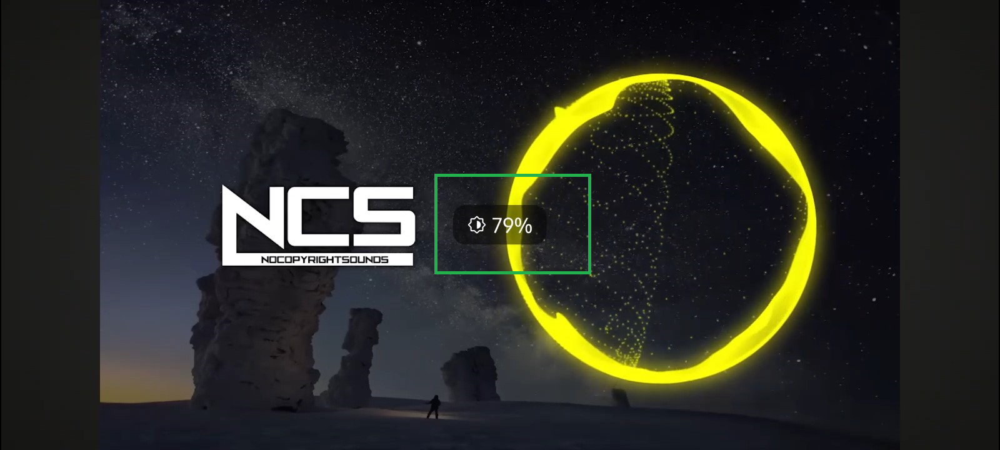
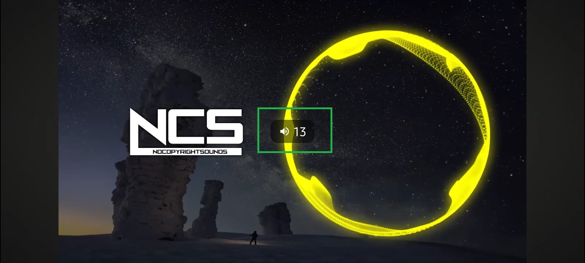

ReVanced Extended
Swipe controls
설정
목차▼
전체 화면 일 때 화면을 위아래로 스와이프 하면 밝기나 소리가 변경돼요.
전체 화면 일 때 화면을 위아래로 스와이프 하면 밝기나 소리가 변경돼요.
Revanced Extended > 스와이프 제스처 > 스와이프 제스처로 밝기 조절 활성화하기 > 비활성화
Revanced Extended > 스와이프 제스처 > 스와이프 제스처로 볼륨 조절 활성화하기 > 비활성화


Show Images
리밴스드 갤러리(DC):
리밴스드 갤러리로 이동
문의:
Kotlin